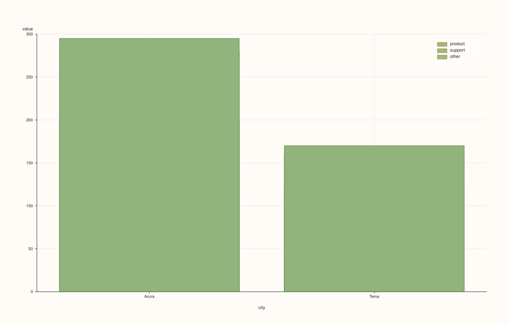
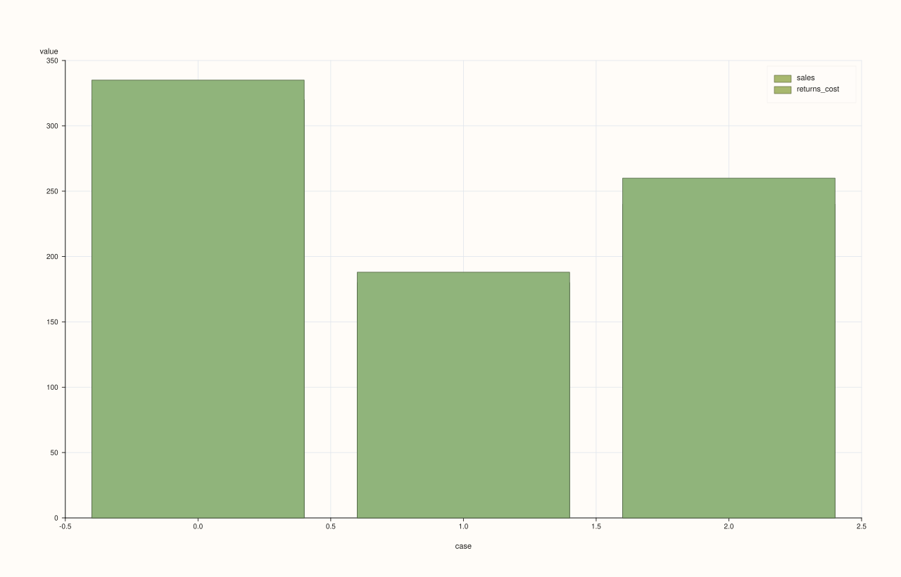

DataFramePlotAccessor::bar_stacked¶
Back to DataFramePlotAccessor API Reference
Signatures¶
DataFramePlotAccessor::bar_stacked(pluss::msharp::RangeView::Of<std::string_view> y_features,
std::optional<std::string_view> x_feature = std::nullopt) const -> pluss::pl::Studio
DataFramePlotAccessor::bar_stacked(pluss::msharp::RangeView::Of<std::string_view> y_features,
std::optional<std::string_view> x_feature,
const BarStackedPlotOptions& options) const -> pluss::pl::Studio
DataFramePlotAccessor::bar_stacked(std::initializer_list<std::string_view> y_features,
std::optional<std::string_view> x_feature = std::nullopt) const -> pluss::pl::Studio
DataFramePlotAccessor::bar_stacked(std::initializer_list<std::string_view> y_features,
std::optional<std::string_view> x_feature,
const BarStackedPlotOptions& options) const -> pluss::pl::Studio
What It Does¶
The bar-chart counterpart to area_stacked(): each y-feature’s values
accumulate on top of the running total of the features stacked before it, so the topmost
bar segment’s height represents the sum of every requested feature at that x position. Like
area_stacked(), there is no single-feature overload — only RangeView and
initializer_list forms — since stacking one feature alone is degenerate.
See line() for the shared x-axis-resolution rules and Studio-return / no-cout
mechanics.
Note
Same overlapping-fill mechanism as area_stacked()
Exactly like area_stacked(), each layer is drawn as a full bar from a
baseline of 0 up to its own cumulative top, not from the previous layer’s top — the
correct stacked shape comes from later (taller) bars being drawn on top of earlier ones in
the same pane. BarStackedPlotOptions’s default alpha (0.65) is semi-transparent, so
overlapping regions blend colors from every layer drawn there rather than showing one flat
color per band — raise alpha toward 1.0 for a fully solid, unambiguous per-band look.
Parameters¶
y_features (RangeView<std::string_view> or std::initializer_list<std::string_view>)
Numeric features to stack, in accumulation order — the first forms the bottom segment,
the last feature’s cumulative top is the grand total. At least one is required — an
empty list throws "DataFrame::plot().bar_stacked: at least one y feature is required".
x_feature (std::optional<std::string_view>, default std::nullopt)
Same three-step resolution as line().
options (BarStackedPlotOptions)
cpp struct BarStackedPlotOptions { double alpha{0.65}; double line_width{1.0}; };
Returns¶
pluss::pl::Studio
A figure with one pane containing one bar trace per requested y-feature, each stacked
on the cumulative total of the ones before it.
Examples¶
Example 1. A two-feature stack with an explicit categorical x-axis.
using namespace pluss::table;
auto breakdown = DataFrame({
{"city", Thread(pluss::make_note({"Accra", "Tema", "Kumasi"}))},
{"sales", Thread(pluss::make_series({320.0, 180.0, 240.0}))},
{"returns_cost", Thread(pluss::make_series({15.0, 8.0, 20.0}))},
});
auto chart = breakdown.plot().bar_stacked({"sales", "returns_cost"}, "city");
chart.show();
Each city gets one bar whose bottom segment is sales and whose top segment (stacked above
it) reaches sales + returns_cost.

Example 2. Three features stacked, via a reusable RangeView.
auto parts_df = DataFrame({
{"city", Thread(pluss::make_note({"Accra", "Tema"}))},
{"product", Thread(pluss::make_series({200.0, 120.0}))},
{"support", Thread(pluss::make_series({80.0, 40.0}))},
{"other", Thread(pluss::make_series({15.0, 10.0}))},
});
std::vector<std::string_view> parts{"product", "support", "other"};
auto chart = parts_df.plot().bar_stacked(
pluss::msharp::RangeView::Of<std::string_view>(parts), "city");
chart.show();

Example 3. No x_feature: falls back to the frame’s own row labels, as with every other
chart method on this accessor — see line()’s Example 3.
auto chart = breakdown.plot().bar_stacked({"sales", "returns_cost"});

Example 4. An explicit BarStackedPlotOptions, raising opacity toward a fully solid look.
BarStackedPlotOptions stacked_options;
stacked_options.alpha = 1.0;
stacked_options.line_width = 1.2;
auto chart = breakdown.plot().bar_stacked({"sales", "returns_cost"}, "city", stacked_options);
chart.show();
Example 5. The initializer_list overload with an explicit options object.
auto chart = breakdown.plot().bar_stacked({"sales", "returns_cost"}, "city", stacked_options);

Notes¶
No single-feature overload; only
RangeView/initializer_listforms.At least one y-feature is required.
Same “each layer fills from a flat zero baseline, correct shape via draw order” mechanism as
area_stacked()— see the note above.Returns a
pluss::pl::Studio— seeline()’s important callout for how to view or save the result.
See Also¶
DataFramePlotAccessor::bar: the non-stacking, grouped-bars sibling.DataFramePlotAccessor::area_stacked: the same accumulating idea as continuous filled regions instead of discrete bars.DataFramePlotAccessor::line: the canonical explanation of this accessor’s shared mechanics.